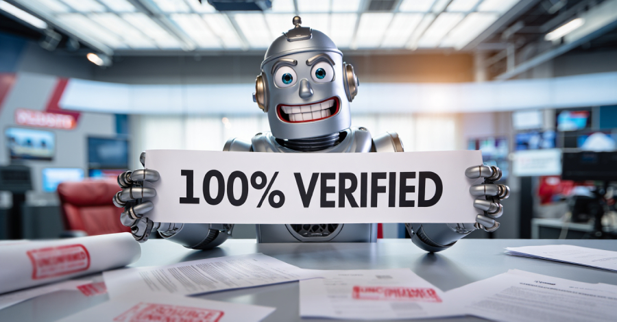

L'intelligence artificielle au sein de la Cybersécurité
J'ai choisi ce sujet car la cybersécurité est un domaine dont les entreprises et nous même avons besoin au quotidien, même si il est large. Et j'ai choisi de le compléter avec de l'IA car c'est un sujet plus d'actualité qui est en expension et qui va de plus en plus s'implementer dans nos vies. Peut être que dans 50 ans, les IA entre elles se battront entre les pays, les organisations etc...
Outils et gestions des articles utilisés
- Feedly : Agrégateur de flux RSS pour suivre les dernières actualités
- Google Alerts : Service de notification pour recevoir des alertes sur des sujets spécifiques
- Méthode Push : Abonnement à des newsletters spécialisées en cybersécurité et IA
- Méthode Pull : Recherche proactive d'articles via des moteurs de recherche et bases de données académiques
Ransomware et IA en 2026
Cet article explique comment l’intelligence artificielle transforme les cyberattaques, notamment les ransomwares. Les attaques deviennent automatisées et capables de s’adapter en temps réel. L’IA permet aussi l’utilisation de deepfakes et de clonage vocal, rendant les attaques beaucoup plus crédibles et dangereuses.
 Lire l'article complet
Lire l'article complet
Cyberattaques et IA : principaux risques en 2026
Selon un rapport international, les cyberattaques restent le principal risque pour les entreprises. L’intelligence artificielle devient aussi une menace importante avec des risques de manipulation, de fuite de données et de problèmes juridiques liés à son utilisation.

Lire l'article completAI Cloaking Attack : une nouvelle menace
Cet article présente une nouvelle technique d’attaque utilisant l’intelligence artificielle pour contourner les systèmes de sécurité. Les hackers utilisent des méthodes avancées pour masquer leurs actions et éviter la détection, rendant les attaques plus difficiles à identifier.
Lire l'article complet